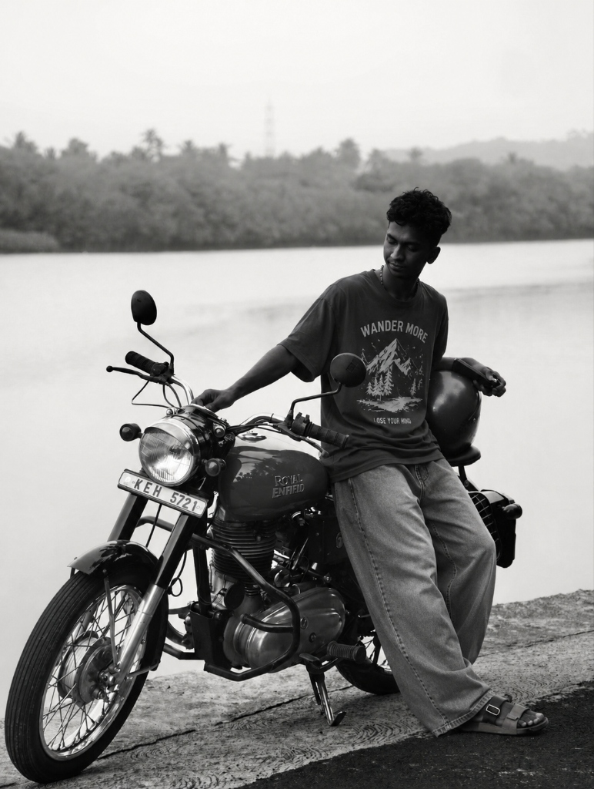
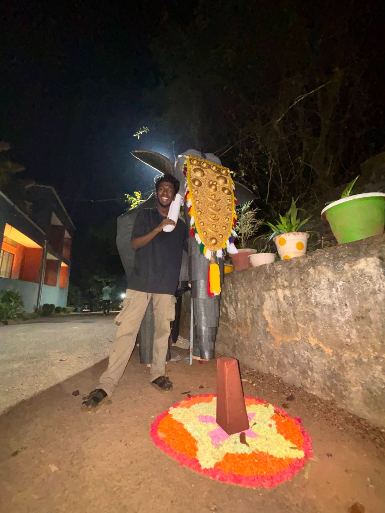
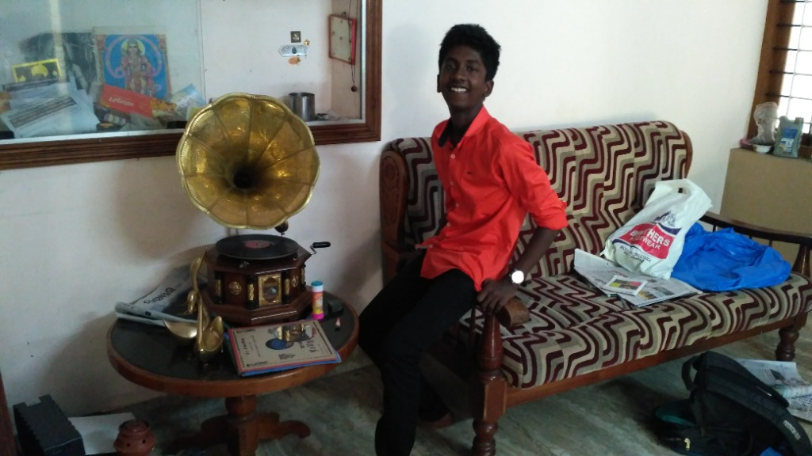
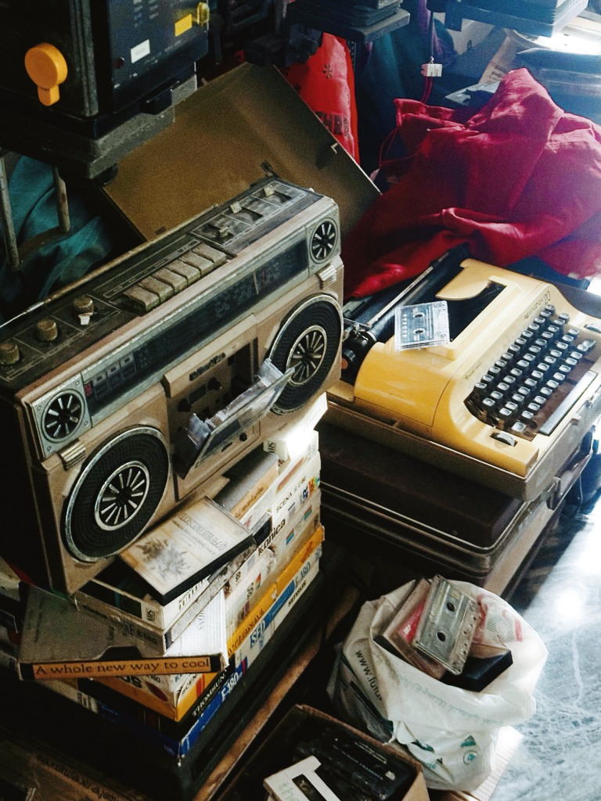
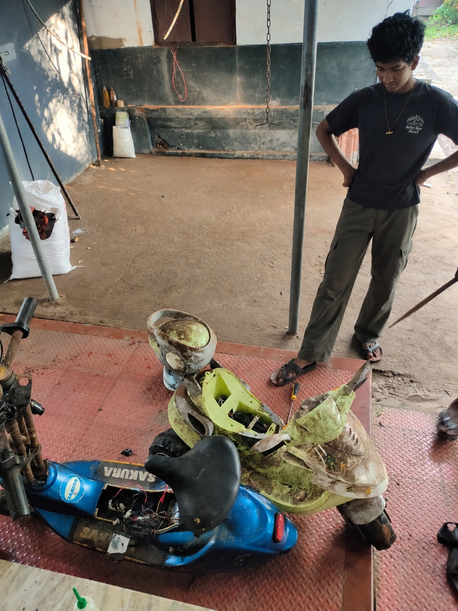

Hey, I’m Hari. Hari to the outside world, Thakkudu to pretty much everyone in college. I study Fashion Communication at NIFT Kannur, but honestly, you’ll probably find me somewhere other than the classroom.
You’ll usually find me in a workshop, digging through an antique store, fixing something that probably should’ve been replaced years ago, or taking photos of things nobody asked me to photograph.
I like old things, weird things, machines with too many screws, and figuring out how stuff works. I spend my time between making things, breaking things (sometimes accidentally), and getting unnecessarily invested in things that catch my interest.
If I’m interested in something, yeah bro, you’re safe. I’ll probably spend the next few hours talking about it, researching it, or trying to build it myself.
This website is basically a collection of stuff I like, stuff I make, and photos I take along the way.
Anyway, have a look around. :))


